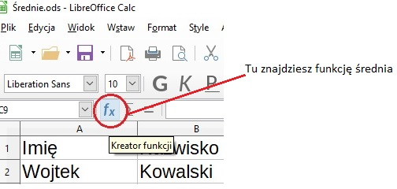
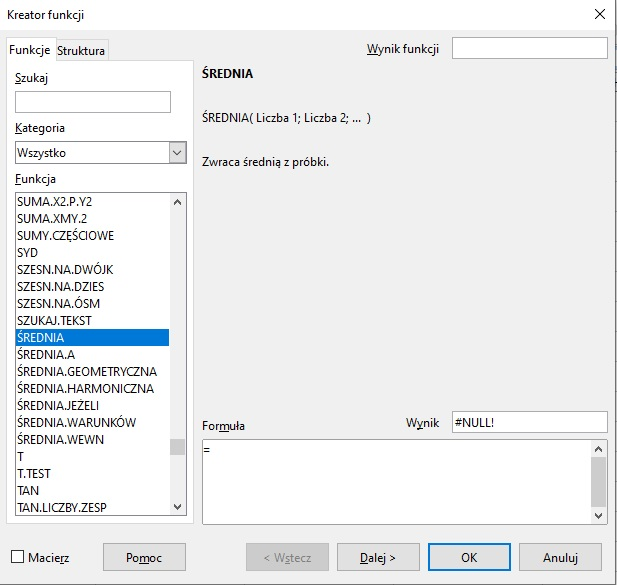
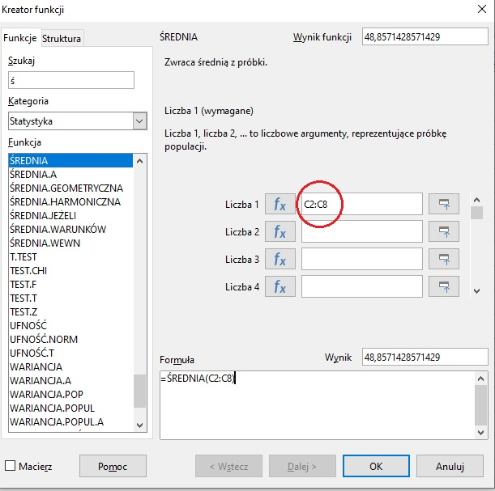

Ćwiczenia krok po kroku
Temat: Projektowanie tabeli i stosowanie funkcji arkusza kalkulacyjnego - cd. Korzystamy w formule z funkcji średnia.
1. Pobierz plik
Średnie.ods
2. Kliknij w komórkę C9
W tej komórce obliczymy średnią wagę uczniów.
3. Na pasku narzędzi kliknijcie w przycisk kreator funkcji

4. W kreatorze funkcji znajdźcie funkcę średnia i kliknijcie Dalej

5. W okienku Liczba 1 wpiszcie C2:C8

6. Naciśnij Ok lub klawisz Enter, pojawi się wynik.
7. Podobnie obliczcie średnią wzrostu i wieku
Obliczając średnią wzrostu wprowadźcie w kreatorze: Liczba 1 D2:D8
Obliczając średnią wieku wprowadźcie w kreatorze: Liczba 1 E2:E8
Plik zapiszcie i odeślijcie na mojego e-maila